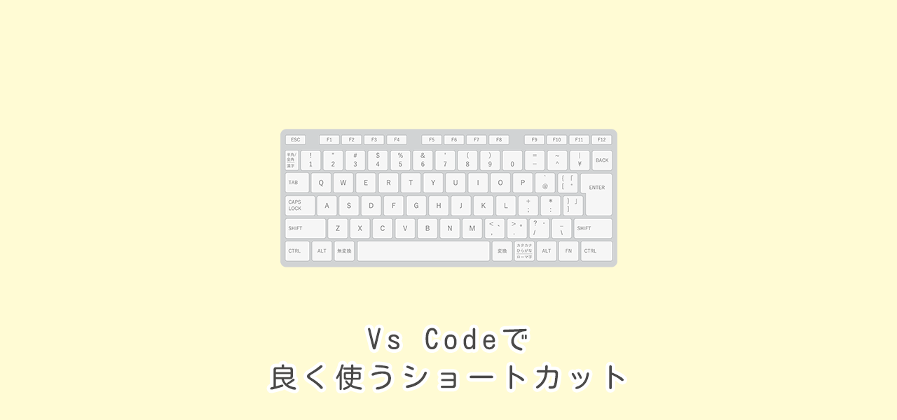

Vs Codeで良く使うショートカット
2022/02/27

この記事の目次
基本操作
| Tab | インデントの追加 |
|---|---|
| Ctrl + [ | インデントの削除 |
| Ctrl + Z | １つ戻る |
| Ctrl + Y | １つ進む |
選択関連
| Alt + Click | クリックした箇所にカーソルを増やす |
|---|---|
| Ctrl + Alt + 上下矢印 | カーソルを垂直方向に増やす |
| Ctrl + D | 同じ単語を順に選択する |
| Ctrl + Shift + L | 同じ単語を一気に選択する |
| 単語を選択 → Alt + ダブルClickで複数選択 | 同じ単語をクリックしたものだけ複数選択 |
移動・複製
| Alt + 上下矢印 | 行の移動 |
|---|---|
| Shift + Alt + 上下矢印 | 行の複製 |
| Ctrl + Enter | 次の行を挿入 |
| Shift + Ctrl + Enter | 前の行を挿入 |
検索・置換
| Ctrl + F | ファイル内での検索 |
|---|---|
| F3 | 次の検索結果に移動 |
| Shift + F3 | 前の検索結果に移動 |
| Ctrl + H | ファイル内での置換 |